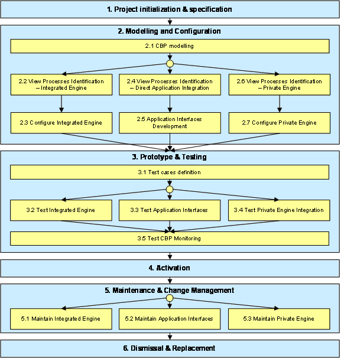
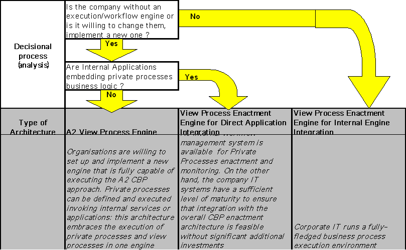

")

Cross-organisational business processes - Application guidelines and design rules
- Introduction
- Design rules
- Application procedure
-
Guidelines and relevant issues
- Project initialisation & specification
-
Modelling and configuration
- Step 2.1: CBP modelling
- Steps 2.2 – 2.7
- Step 2.2: View processes identification – Integrated engine
- Step 2.3: Configure integrated engine
- Step 2.4: View processes identification – Direct application integration
- Step 2.5: Application interfaces development
- Step 2.6: View processes identification – Private engine
- Step 2.7: Configure private engine
- Prototype & testing
- Activation
- Maintenance & change management
Introduction
In this chapter we first describe some general design rules that should help users to implement the architecture alternatives described in the last chapter. Furthermore, an application procedure and a CBP implementation procedure guiding the user through the necessary steps for implementing the architecture are given.
Design rules
The design rules described in this chapter are general rules/proposals for the design of the “system” cooperation across organisations. They are not a procedure to follow during the design.
Proposals for design rules for enterprise cooperation:
- The enterprise cooperation shall have a model of the CBPs covering the workflow and the object exchange.
- All communications between partners shall be defined within the CBP model and not hard coded in the interface components.
- Information required for the cooperation shall not be fixed in programming code and might be configurable by a modelling approach.
- The owner of a document shall be traceable.
Proposals for design of an enterprise participating in a cooperation:
- Enterprises shall have a model of their view processes covering external interfaces and transformations to the internal processes.
- Enterprises shall be able to manage local processes in a way which will allow them to coordinate data exchange with other members of the cooperation.
- Enterprises shall be able to provide monitoring information in coherence with the CBP model.
Application procedure
Purposes
The purpose of this chapter is to outline the procedural steps that an organization should undertake in order to implement the CBP enactment architecture in its business environment. The objective is to highlight the relevant issues concerning the architecture implementation, and to provide guidelines on how to solve each issue using available tools and methodologies, either from ATHENA or from the state of the art.
The procedure is described abstractly, i.e., without referring to specific business scenarios and individual organization requirements. Developing detailed implementation guidelines for specific business cases is out of the scope of the present Deliverable, and will be addressed by Project A4, where implementation requirements from the pilot cases are matched with the general architecture developed in this work package.
Overall Procedure
The general implementation procedure for the CBP enactment architecture is outlined in the following Figure. The procedure consists of the following main phases:
- Project initialisation & specification. This phase deals with general aspects common to most IT projects, such as strategy and requirements formulation, investment planning, activities planning, benefits estimation and performances monitoring.
- Modelling and Configuration. This phase corresponds to the “design time” activities required for setting up the CBP enactment architecture. Most of these activities deal with CBP modelling and the related supporting tools. Different approaches are needed for each of the three architecture models: Integrated Engine for CBPs and Private Processes, Direct Application Integration and Private Engine.
- Prototype & Testing. This phase consists of setting-up prototype cases for testing the enactment architecture. Testing considers aspects dependent on the architecture model (of the three proposed) as well as common aspects, such as CBP monitoring.
- Activation Phase. This phase includes all the necessary activities to make the system available to the organization for regular usage, e.g., deployment, users training and support, roll-out across the organization.
- Maintenance & Change Management. In the maintenance phase a procedure must be established to manage system failures or change requests. These have to be handled differently depending on which of the three architecture models has been implemented.
- Dismissal & Replacement. This phase consists of dismissing the system at the end of its life-cycle, after an adequate alternative technology has been found to replace it. Given the level of innovation of the proposed architecture on industrial state-of-the-art, it is difficult at this stage to imagine a replacement scenario. Hence this phase will not be discussed.

Figure: Enactment architecture application procedure
Guidelines and relevant issues
In the following we provide guidelines for each of the phases identified above, indicating the main steps to undertake and the relevant issues and approaches to consider.
Our attention focuses solely on relevant issues from the Enactment Architecture point of view. We are aware that enabling CBPs poses important questions in other fields, e.g., about how to establish collaborative business relationships and about the content and scope of the CBPs themselves. Hence the information provided here will have to be complemented by the results of other ATHENA projects like A1 (especially A1.4), in order to develop a comprehensive CBP approach.
Project initialisation & specification
The main architecture-related issues in this Phase are:
- Definition of an implementation plan that takes into account the various responsibilities and obligations of the different partners involved in the CBP.
- Definition of a deployment strategy, with clear identification of the physical architecture to be implemented (e.g., centralized, peer-to-peer, hybrid).
- Definition of a joint policy plan, taking into account such aspects as:
- Service level standards;
- Contingency planning and management;
- Quality aspects;
- Security aspects.
- Definition of standards to be adopted at process level and at document/event level.
- Business plan, including performance measurements, for the CBP initiative.
Support for the solution of these issues can be provided by:
- Methodological guidelines for multi-enterprise architectures implementation.
- CBP-oriented reference standards like, e.g., CPFR and RosettaNet or other identified in work package A2.1, including contract templates and guidelines for establishing collaborative platforms.
Enterprise modelling might be an adequate instrument to support here issues such as: how IT solutions fit into the daily business or work. Starting from that enterprise modelling can be extended and used in the next phases (Modelling and Configuration).
Modelling and configuration
Step 2.1: CBP modelling
This step consists of the definition and sharing of the Cross-organization Business Process Models, following the approach defined in the work package A2.2 and documented by Deliverable DA2.2. The mentioned Deliverable provides comprehensive guidelines and tools for these activities.
Steps 2.2 – 2.7
To design and configure the CBP enactment architecture appropriately we provide guidelines on how to design the architecture, according to different scenarios that may be found at each partner site. In particular, rules are defined to identify which of the three architectures described in Chapter 5 is the most suitable one. Furthermore, the specific role that each component will play has to be determined.
The decisional process can be summarised with the following schema:

Figure: Decisional process
After having identified which of the three architectures will be targeted, guidelines will apply at different levels:
- modelling
- rules for internal components
- rules for interface components
- rules for CBP components
In the following table we have reported for each type of component and for each type of architecture, what are the most relevant issues to be taken into account for every specific case.
Moreover, according to the different situation, it may result that for each component:
a) it is necessary to develop a component from scratch, using common guidelines
b) it is necessary to configure an existing tool/component according to common guidelines
c) it should not be taken into account because it is not relevant or not available
According to such cases, we have painted the cells of the table with GREEN for cases a) (dark grey), with YELLOW for cases b) (light grey) or not painted for cases c).
|
Type of Architecture |
A2 View Process Engine |
View Process Enactment Engine for Direct Application Integration |
View Process Enactment Engine for Internal Engine Integration |
|
|
Modelling |
PP |
Modelling of both Public Processes and process views can be done with ATHENA A2.2 methodology & tools. Both PP and PV will be stored in the same repository. |
Not relevant since PP are embedded into internal applications |
PP already modelled "privately" by the partner: no assumption possible on technology/tools. Athena A2 approach not possible |
|
PV/CBP |
PV are modelled from scratch, using ATHENA A2.2 methodology & tools |
|
||
|
Partner Private Components |
Private Process Modelling Tool |
ATHENA A2.2 tools approach |
n/a |
Probably already existing with specific technology, for this reason not to be taken into account |
|
Private Process Monitoring & Analysis |
Process monitoring facilities offered by engine developed in A2 |
Not relevant |
Probably already existing with specific technology, for this reason not to be taken into account |
|
|
Private Processes Repository |
see "View Processes Repository" |
n/a: private processes are embedded into internal applications |
Probably already existing with specific technology, for this reason not to be taken into account |
|
|
Internal Engine |
n/a |
n/a |
An enactment engine running the company’s private processes is already in place: it needs to be taken into account and analysed as it will need to be integrated with the Internal Application Gateway through the development of two connectors for SEND and RECEIVE. The two connectors will be provided according to a schema defined by ATHENA A2.4, and specifically implemented according to the different internal enactment engines |
|
|
Internal Applications |
Internal applications will be directly integrated into the A2 CBP Enactment Engine. It is necessary to identify API or Web services to be further integrated with Nehemiah |
Internal applications will be integrated with the Enactment Engine though API or Web Services. It is necessary to identify event-based interfaces. |
Internal applications are not accessible to the Interface Components, since they are handled by the private enactment engine |
|
|
Interface Components |
View Processes Repository |
This repository will need to store both private and public views models and instances. ATHENA A2 approach can be used |
Repository to be developed according to ATHENA A2 approach, containing VP models and instances |
Repository to be developed according to ATHENA A2 approach, containing VP models and instances |
|
Internal Application Gateway |
Direct integration of Internal Applications through "Core Engine" of Nehemiah |
The gateway must handle the enterprise applications APIs, and the standard Enactment Engine interface. It should include: |
The gateway will communicate with the Send & Receive connectors at partner's private side. It should offer: |
|
|
Enactment Engine |
Use of Nehemiah (ATHENA A2 CBP Enactment Engine) |
The basic set of functionalities that the Enactment Engine should provide is: |
In this architecture, the enactment engine will not execute views, since they are already executed by the partner’s private engine. So its main functionalities should be: |
|
|
External Partner Gateway |
The External Partner Gateway is implemented by the "Coalition Engine" of Nehemiah, and communication will be implemented through web services. |
The basic set of functionalities that the External Partner Gateway should provide is: |
The basic set of functionalities that the External Partner Gateway should provide is: |
|
|
Event & Document Correlation Generic Design |
The Event and Document correlation component must be designed in order to support: |
|||
|
Event & Document Correlation Specific Design |
In this architecture View Correlation IDs and Private Processes ID should be handled and mapped by the architecture |
Correlation information must be associated to event types that trigger messages exchanged via the External Gateway. |
View Correlation IDs are mapped to PP Correlation ID and then passed to the internal private engine |
|
|
CBP Components |
CBP Repository Models |
A repository for both, storing the CBP definition and storing the execution data (process instances). The process definition is used for a CBP driven configuration of the engine. The information for the instance repository is derived from the execution of the view engine |
||
|
CBP Repository Instances |
||||
Step 2.2: View processes identification – Integrated engine
This step consists of identifying or defining the View Processes and linking them to the CBP, using an Integrated Engine which also handles the Private Processes.
The main issues for this activity are:
-
Support both inside-out (from the Private Process) and outside-in (from the CBP) definition of views.
-
Support pattern-based recognition of View Processes to be exposed from the existing Private Processes. CBP patterns are discussed in Section Error! Reference source not found. and in the Working Document WD.A2.1.
Step 2.3: Configure integrated engine
This step consists of configuring the Integrated Engine so that it can run consistently both the internal processes and the related process views.
The main issues for this activity are:
-
Consistent mapping of states between internal processes and public views, and the related communications, following the approach introduced in Section Error! Reference source not found..
-
Mapping of messages correlation IDs, following the approach presented in Section Error! Reference source not found.
Step 2.4: View processes identification – Direct application integration
This step consists of identifying or defining the View Processes and linking them to the CBP, using a View Engine which only handles View Processes.
The main issues for this activity are:
-
Map internal application functions that are not necessarily process-oriented, onto CBPs in order to derive the Views that have to be exposed.
-
Map View IDs, provided by the external gateway, onto internal IDs handled by the applications.
Two kinds of support are basically needed:
-
Methodological support is required:
-
To map the applications functional view into a process-oriented view,
-
To define process views at a proper granularity level which is sufficient for CBPs but can also be mapped to applications.
-
-
To handle physical communication, a high level interface should be available to expose the applications business logic and business documents. Existing state-of-the-art tools like those discussed in Section Error! Reference source not found. can provide support functionalities to facilitate the definition and maintenance of the Views/Application mapping.
Step 2.5: Application interfaces development
In case of a direct link to Enterprise Application, the Internal Gateway cannot remove the need for these applications to provide a programmable interface that must be made compatible with the View Process concept.
The main issues are:
-
Providing an event-notification interface for all applications handling internal processes exposed as View Process, to inform the CBP about the progress of internal processes.
-
Handling incoming messages for information provided by business partners via the External Gateway. This interface will also take care of ID correlation on the application side.
Such an interface can hardly be developed from scratch, and will rely on the APIs which are already present in most enterprise systems. Anyway, adaptations will be needed even for modern, web-service based interfaces, to meet the Internal Gateway requirements. Even in this case, usage of a state-of-the-art EAI platform would facilitate development and maintenance of the interfaces.
Step 2.6: View processes identification – Private engine
Similarly to 2.5, this step consists of identifying or defining the View Processes and linking them to the CBP, using a View Engine which only handles View Processes. The difference is that these View Processes must be mapped onto Internal Processes handled by the Private Engine.
The main issue here is to map processes already defined for different purposes (internal vs. external) and using different notations.
In this case, the main support needed is represented by consistent and interoperable process-modelling standards, as have been identified in both the Projects A1 and A2.2.
Step 2.7: Configure private engine
This step consists of configuring the Private Engine so that private processes and view processes can correctly communicate with each other.
The main issues for this activity are:
-
Consistent mapping of states between internal processes and public views.
-
Mapping of messages correlation IDs, following the approach presented in Section Error! Reference source not found.
Prototype & testing
Step 3.1: Test cases definition
Within this step a proper set of test cases is identified to support prototyping and testing of the CBPs being implemented. Test cases are defined according to the requirements of the specific organization and application sector.
No specific issues have been identified from the enactment architecture point of view.
Step 3.2: Test integrated engine
Specific issues related to testing the Integrated Engine architecture model are:
-
Verify the consistency of the mapping and communication between View Processes and Internal Processes. This should be facilitated by the fact that both run on the same engine, and so it should be possible to verify them, e.g., through a unique simulation run.
-
Verify correct messages correlation in both directions, from the Internal Process ID to the external partner View Process ID and vice-versa.
Step 3.3: Test application interfaces
Specific issues related to testing the Direct Application Integration architecture model are:
-
Verify the correct communication between View Processes and the internal applications interfaces. This activity is critical and must be handled carefully, since it is not possible to circumscribe the test within one single system.
Indeed, a proper testing procedure will require cross-system test runs, that will have to be properly scheduled and monitored, taking the possible impact of external components into account (e.g., other application functions or the network infrastructure). For example, a problem caused by an application unexpectedly working on the same document ID can be very hard to detect.
-
Verify correct messages correlation in both directions, from the application-handled ID to the external partner View Process ID and vice-versa.
Step 3.4: Test private engine integration
Specific issues related to testing the Direct Application Integration architecture model are:
-
Verify the correct communication between View Processes and the Internal Processes handled by the Private Engine. This activity should be facilitated by the fact that both environments offer monitoring functions to help problem identification. Anyway, coordinated tests should be run simultaneously on the two engines.
-
Verify correct messages correlation in both directions, from the Private Process ID to the external partner View Process ID and vice-versa.
Step 3.5: Test CBP monitoring
No specific issues have been identified concerning how to test the CBP components of the architecture. The system should be tested with standard procedures, taking into account functionality aspects, i.e., fulfilment of the requirements, as well as technical aspects such as responsiveness and reliability.
Activation
The deployment of the architecture should follow the usual conventions applied by the involved organizations for their IT projects. Information support and training of users should take into account the following issues into account:
-
Final users, involved in the normal enterprise activities through their internal workflow engines or enterprise applications should not suffer dramatic changes of their way of working. If this is not the case, then the whole project should be reconsidered, since one of our inspiring principles is to make cross-organization integration as transparent as possible.
-
Technical users, such as workflow system administrators, should be trained on the new system and on the various interfaces with their existing systems, according to the three implementation models.
Maintenance & change management
Step 5.1: Maintain integrated engine
Maintenance of View Processes in the case of the Integrated Engine should be facilitated by the fact that they are managed in the same environment as the Private Processes. In this way, inside-out changes, originating on the internal side, should have a direct impact on the View Processes and potential problems should be easily detected. Vice-versa is also true.
Step 5.2: Maintain application interfaces
This is the case which is more likely to generate problems on the maintenance side:
-
Outside-in changes, from the CBP to View Processes down to the enterprise applications, might pose unexpected requirements to the interfaces that have been developed. For example, a new state or a new event type must be handled that requires a new call to be exposed by the underlying application. In the worst case, the application itself might have to be customized.
-
Inside-out changes might cause unexpected problems on already running CBPs. For example, an application functionality change might impact the interface exposed to a View Process in unexpected ways. These problems are usually very hard to detect and may cause serious system disruptions.
Step 5.3: Maintain private engine
The management of change is not as complex as in the previous case, but still it requires a careful synchronization of changes between the two engines. In particular, the administrator of the Private Engine must be aware of changes on Private Processes that may impact the view processes, and take the necessary alignment actions. Automatic or semi-automatic alignment, via process model exchange tools, would improve this process.